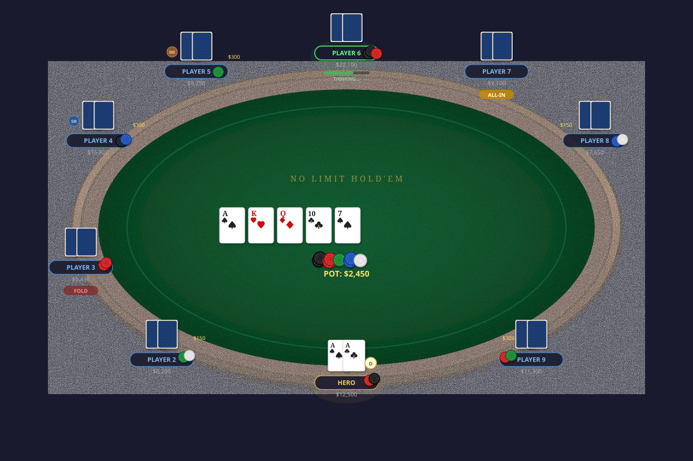

Below is pkarena0-web mounted the way a book mounts it: an
ordinary picture of the table, which a module upgrades to the real thing
when you press Deal. With script off, or from a file, you
see the picture. Nothing is fetched until you ask.

Two lines put it on a page:
<script type="module" src="pk-table.js"></script>
<pk-table seed="42"><img src="table.png" alt="…"></pk-table>And a second one, further down, is its own game: each element imports its own copy of the engine, so two tables on one page deal two hands.
Attributes: seed pins which bots sit down (the cards are
dealt fresh every hand), delay is the
pause between bot actions in milliseconds (default 1000), base
is where the engine files live and css where the stylesheet is
(both default to beside the module, which is the release layout; this
checkout keeps them under pkg/ and css/), and
bots is reserved.